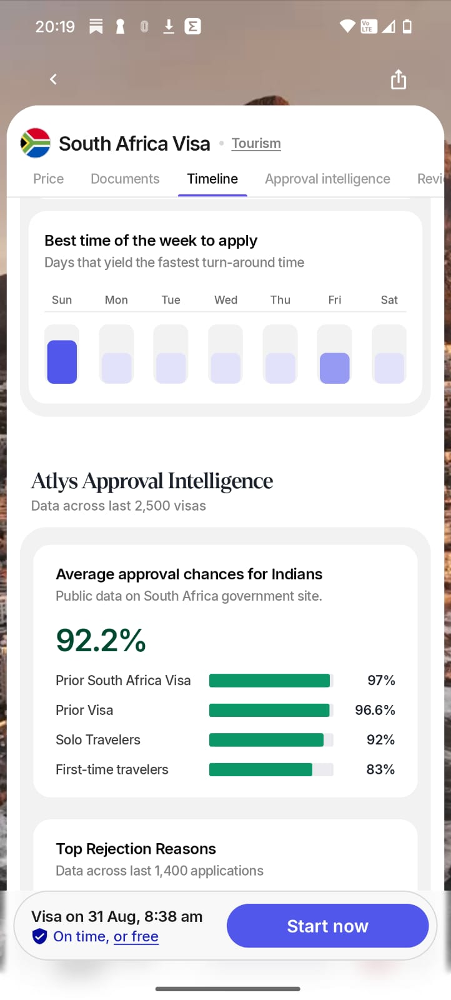
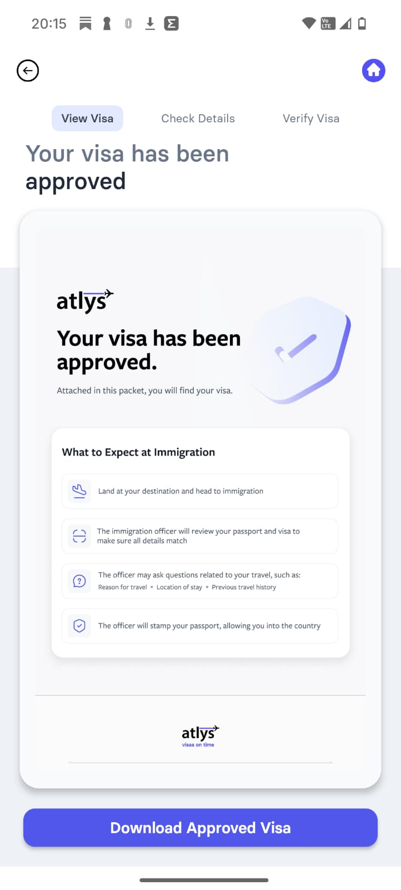
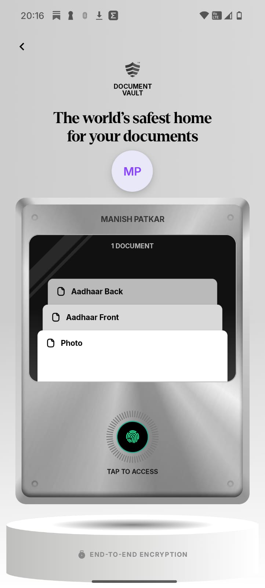

Broad audience, fragmented decisions
The traveler is still asking whether the trip is possible.
Atlys has demonstrated that a stressful, fragmented visa process can be made dramatically simpler and more predictable.
This note explores how Atlys can supercharge that foundation—by entering the traveler’s journey earlier and enabling every successful trip to create the next user or trip.
It did not merely digitize a visa form. It converted changing requirements, uncertain outcomes and fragmented portals into a product travelers can plan around.



Travelers assemble feasibility manually across search, government portals, agents, spreadsheets, WhatsApp and booking platforms. The visa is one consequential moment in a longer decision.
The traveler is still asking whether the trip is possible.
Use passport, residency, timing and readiness intelligence to turn curiosity into a viable trip.
The company can improve many parts of the system. This note deliberately separates the complete business model from the narrower mandate of a growth team.
Generic inspiration and booking are crowded. Atlys has a more defensible position between them: the feasibility layer for global travelers.
Social, creators, friends and events create desire.
Passport · residence · access · time · readiness · group
Flights, stays and packages turn the decision into spend.
Local transport, activities and services fulfil the trip.
One loop changes when travelers enter. The other changes what every completed trip creates next.
Help travelers answer whether a trip is possible before they start searching for a visa.
Turn genuine moments of value into another traveler, richer knowledge or a future trip.
The audience is largest before visa intent. Atlys can short-circuit the fragmented journey by resolving a real constraint and preserving the resulting trip context.
Constraint-aware destination options based on passport, residence, dates and group.
Visa timelines, seasonality, events and available leave combined into viable windows.
Shared planning and compatibility across travelers rather than one organizer doing everything.
Readiness, documents, expected processing and total constraints before money is committed.
Every earlier-intent surface needs a natural place where its question already exists—and a credible path from answer to transaction.
Destination, access, cost and timeline questions become personalized feasibility pages.
Inspiration becomes a feasible plan rather than another saved post.
F1, concerts, conferences and pilgrimages become timely trip entry points.
WhatsApp plans and co-traveler invitations distribute privately with real intent.
Employers, banks, airlines and OTAs embed readiness where intent already exists.
Saved profiles and timely prompts restart the journey with lower friction.
Atlys should not manufacture daily engagement or place a share button everywhere. It should enable the natural action that follows relief, confidence, delight or anticipation.
A shared plan or readiness flow activates the rest of the group.
Great execution becomes contextual word of mouth—not a generic referral prompt.
A review or practical learning helps the next traveler make a decision.
Passport Trails or a trip recap is deliberately created and shareable by choice.
Profiles, documents and companions make the next trip dramatically easier.
Atlys recommends what is realistically possible based on what it already knows.
Loop A turns early questions into qualified trip intent. The core visa engine delivers the trusted outcome. Loop B turns that outcome into co-travelers, knowledge, recommendations and repeat demand—which feed the system again.
These are illustrative product families. Internal funnel, cohort, distribution and contribution-margin data should decide which specific experiment comes first.
Traveler valueAnswers where, when and whether a trip can realistically happen.
Illustrative productsDestination feasibility, time forecast, compatibility and readiness.
Traveler valueReplaces one overwhelmed organizer with a coordinated shared journey.
Illustrative productsShared trip, invitations, permissions and group readiness.
Traveler valueProvides practical answers grounded in verified journeys and outcomes.
Illustrative productsReviews, immigration guidance, traveler answers and learnings.
Traveler valueMakes the next trip easier without manufacturing daily engagement.
Illustrative productsReusable identity, document intelligence, next feasible trip and recaps.
The opportunity is ambitious. The roadmap should remain evidence-led and explicitly protect the trust that created Atlys’s right to expand.
Meaningful travel intent exists before travelers begin searching for a visa.
Personalized feasibility outperforms generic travel content.
Earlier-intent users convert downstream into profitable applications.
Outcome data makes future feasibility answers materially better.
Group products increase travelers and paid transactions per trip.
Post-trip outputs create measurable new or repeat demand.
Ancillary services improve contribution without reducing trust or conversion.
Loop economics outperform equivalent paid acquisition over time.
Real traveler value · Atlys advantage · Natural distribution · A compounding output · Conversion proximity · Trust safety · Testable economics
Atlys does not need to own every travel transaction. It can own the intelligence and trust that determine whether international travel is possible.